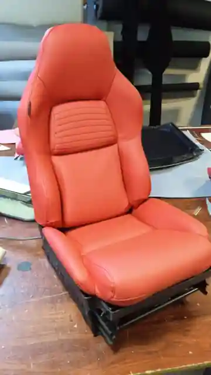

Qué necesitas renovar.
Selecciona el tipo de trabajo e indica el modelo y la zona del vehículo.
Un asiento que necesita renovarse. Un techo que se descuelga. Un interior al que quieres darle otro acabado. Hablemos de lo que necesita tu vehículo.
Automóviles · Motos · Náutica · Vehículos especiales

El uso, la pieza y el material importan. Aquí puedes ver las áreas de trabajo que anuncia el taller y consultar la que necesitas.
Renueva una pieza o plantea el tapizado del interior. Consulta opciones de cuero natural, cuero sintético, tela y Alcántara.
Asientos · Techos · Volantes · Puertas · Alfombrillas
Tapizado y personalización del asiento. El taller anuncia trabajos para motocicletas de distintas marcas y cilindradas, con asesoramiento en materiales.
Asiento · Materiales · Personalización
Asientos, bancos, sofás y colchonetas para embarcaciones. Consulta los materiales adecuados para el uso náutico y la exposición a la humedad.
Asientos · Bancos · Colchonetas · Sofás · Capotas
Consulta tu caso de capota eléctrica, techo eléctrico, cortinilla o cristal panorámico. El alcance de cada intervención lo debe valorar el taller.
Capotas eléctricas · Techos · Cortinillas
Tapicería para coches antiguos: asientos, techo, volante y alfombrillas. Habla con el taller sobre el acabado que buscas antes de decidir materiales.
Asientos · Techo · Volante · Alfombrillas
Trabajos para autobuses, camiones y tractores. Consulta las piezas, el uso del vehículo y la selección de materiales para tu proyecto.
Autobuses · Camiones · Tractores
Fotografías del propio negocio, sin recreaciones de trabajos ni imágenes de un taller que no es este.
Imágenes publicadas en la web de Schön Autos. No se presenta una comparación de antes y después.
No hace falta tener todas las respuestas. Empieza por el vehículo y la pieza; los detalles se acuerdan con el taller.
Selecciona el tipo de trabajo e indica el modelo y la zona del vehículo.
Revisa el texto antes de contactar. Nada se envía sin que lo decidas.
Material, alcance, precio y fecha se consultan directamente con el taller.
Recorrido de contacto propuesto para esta demostración; pendiente de acordar con el negocio.
Sí. La oferta publicada del taller incluye piezas como asientos, techos, volantes, puertas y alfombrillas. Indica cuál quieres tapizar para que puedan valorar tu caso.
Esta demostración no publica tarifas ni plazos del taller. El presupuesto y la disponibilidad deben consultarse directamente según la pieza, su estado y el trabajo solicitado.
No. Puedes indicar que necesitas asesoramiento. La web del taller anuncia orientación sobre materiales para automóviles, motos, embarcaciones y otros vehículos.
Puedes preparar una consulta y, si el taller atiende por WhatsApp en su número público, adjuntar después las fotos manualmente en esa aplicación. Esta web no sube ni envía archivos.
El vehículo, la zona que quieres renovar y una idea del acabado. Es un buen punto de partida para consultar el trabajo.
También puedes llamar al taller658 44 52 25Presupuesto y disponibilidad a confirmar con el taller. Preparar una consulta no confirma una cita.
Pol. Industrial Polysol, C/ Tres, 20
41500 Alcalá de Guadaíra · Sevilla
Tapicería de automóviles, motos, náutica,
clásicos y vehículos especiales.
Consulta también capotas y techos eléctricos.